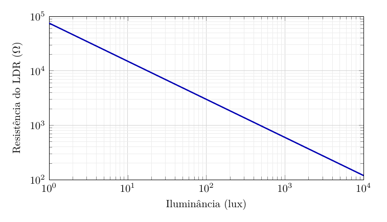
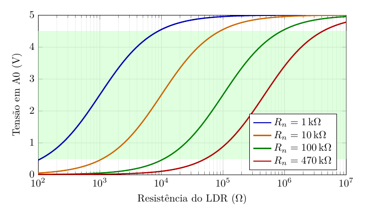

Como funciona
Do sensor ao número na tela: veja como o LUXIF transforma luz em uma medida em lux.
O caminho da medição
- A luz chega ao LDR e muda a sua resistência: quanto mais luz, menor a resistência.
- O LDR forma um divisor de tensão com um dos quatro resistores de referência. A tensão no ponto entre os dois depende da luz.
- O Arduino lê essa tensão com seu conversor analógico-digital. Se ela estiver alta ou baixa demais, ele troca de resistor e lê de novo.
- Com a leitura e o resistor em uso, o Arduino calcula o valor em lux e o mostra no display OLED.
O sensor
O LUXIF usa um LDR (resistor dependente de luz) de 10 mm. Ele é feito de um material semicondutor, o sulfeto de cádmio: quando a luz o atinge, libera cargas elétricas e a resistência cai. Essa queda não é linear, mas segue uma lei de potência:
R = A × L−γ
R é a resistência do LDR, em ohms; L é a iluminância, em lux; A é a resistência do LDR em 1 lux; e γ (gama) indica o quanto a resistência cai quando a luz aumenta. A e γ vêm do datasheet e são ajustados na calibração.


O circuito
Cada resistor de referência (1 kΩ, 10 kΩ, 100 kΩ e 470 kΩ) está ligado a uma saída do Arduino (D2 a D5). Só uma saída fica ligada (5 V) por vez; as outras ficam como entrada, o que na prática desconecta seus resistores. O resistor ligado e o LDR formam um divisor de tensão, e o ponto entre eles vai para a entrada analógica A0:
V = 5 V × RLDR ÷ (Rn + RLDR)
Rn é o resistor em uso. Como as duas resistências são sempre positivas, a fração fica entre 0 e 1: a tensão lida nunca passa de 5 V, o limite da entrada A0. Os LEDs azuis que indicam a faixa ficam em saídas próprias (D6 a D9), fora do divisor, para não interferir na medição.
Do sinal ao lux
A cada volta do programa, o Arduino:
- lê a entrada A0 dez vezes seguidas e tira a média, obtendo um número N entre 0 e 1023;
- confere se N está entre 100 e 920 (cerca de 0,5 V e 4,5 V). Acima disso, o ambiente está escuro para a faixa e ele passa para um resistor maior; abaixo, está claro demais e ele passa para um menor;
- calcula a resistência do LDR pelo divisor: RLDR = Rn × N ÷ (1023 − N);
- converte a resistência em lux invertendo a curva do sensor: L = (A ÷ RLDR)1/γ;
- mostra o resultado no display, com o LED da faixa aceso.
Alcance e consumo
- Alcance: o LUXIF trabalha de cerca de 1 a 1000 lux, do ambiente escuro à sala bem iluminada. Para medir a luz do sol direta, que passa de 30 000 lux, coloque um filtro difusor na frente do sensor.
- Ajuste da curva: as constantes A e γ do código vêm do datasheet do LDR. Para ajustar a um sensor específico, basta alterar essas duas constantes.
- Bateria: com o Arduino Uno, uma bateria de 9 V dura várias horas. A versão com ESP32 consome mais por causa do Wi-Fi; para uso prolongado, alimente-a pela USB ou por uma fonte.